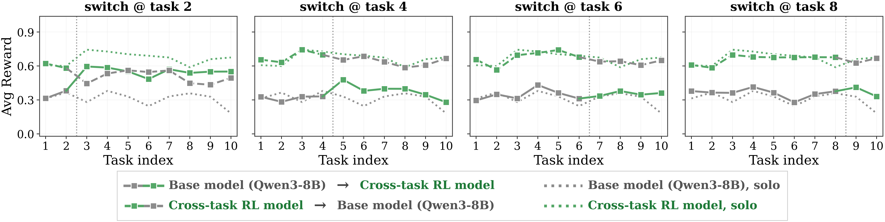

Main results at a glance
Cross-Task RL turns experience into competence
+99%
cumulative reward vs. base model
+39%
vs. single-task RL
+55%
on held-out latents (OOD)
+14%
on held-out environments (OOD)


A framework where every environment is built around an explicit, ground-truth latent that defines the hidden structure shared across a sequence of tasks — so we can measure, for the first time, whether agents actually learn from experience.
Equal contribution: Daksh Mittal, Tommaso Castellani, Thomson Yen
An agent that adapts spends fewer turns on later tasks by reusing what it learned. The latent is known to us, so every failure to adapt is diagnosable.
LLM agents are increasingly deployed in settings such as personalization and customer support, where they encounter sequences of related tasks whose shared hidden structure can be leveraged to improve performance on subsequent tasks. Yet the community lacks a systematic understanding of whether agents can utilize earlier experience to better tackle later tasks. We introduce a framework where each environment is built around an explicit, ground-truth latent variable that defines the structure shared across a sequence of tasks, plus metrics that separate exploration from exploitation as independently measurable capabilities. We demonstrate its utility through three studies: how and why frontier models fail at cross-task adaptation; whether post-training on sequences of related tasks induces general adaptation, and where the improvement comes from; and how algorithmic choices such as inter-task feedback shape training dynamics and generalization.
Even under simple latents, models exhibit adaptation neglect, adaptation breakdown, and adaptation miscalibration.
See failure modes →GRPO over full sequences makes adaptation reliable — and the gains transfer out of distribution.
See results →Counterintuitively, training under sparser feedback transfers more robustly across deployment conditions.
See ablations →

Pick an environment, prompt, feedback, and model, then stream the recorded trajectory. Or compare a Qwen3-8B agent before vs. after Cross-Task RL on the same task.